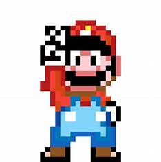
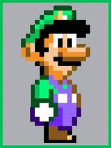
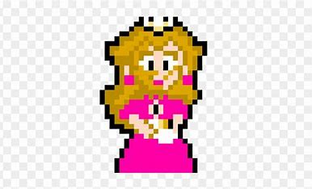
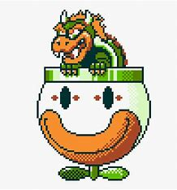
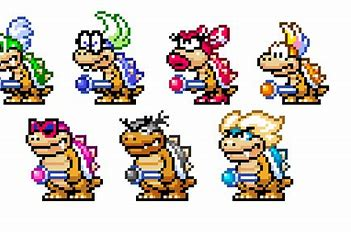
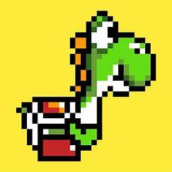

The Characters of Super Mario World
Super Mario World introduced an unforgettable cast of characters that helped shape the identity of the Mario franchise for generations. With the transition from the NES to the more powerful Super Nintendo Entertainment System (SNES), Nintendo brought these characters to life with more color, personality, and gameplay depth than ever before. Each character, from the iconic heroes to the quirky villains, plays a crucial role in making Super Mario World a timeless adventure filled with surprises, challenges, and charm.
Mario – The Hero of the Kingdom
Mario, Nintendo’s most famous character, returns in Super Mario World as the brave and determined hero on a mission to save Princess Peach and restore peace to Dinosaur Land. Known for his red cap, blue overalls, and signature mustache, Mario uses his athletic abilities and power-ups to overcome any obstacle. From jumping over lava pits to flying with the Cape Feather, Mario’s gameplay versatility is a big reason why this title remains a fan favorite. He is the heart of the game and represents courage, persistence, and fun.
Luigi – The Loyal Brother
Luigi, Mario’s younger twin brother, is a playable character in Super Mario World’s two-player mode. While he shares Mario’s moveset in this game, Luigi would later evolve into a more distinct character in future titles. Clad in green, Luigi often plays the underdog role, but his dedication and courage are never in question. He’s always ready to back up his brother, and for many players, Luigi represents the supportive friend or sibling who stands by your side in even the toughest challenges.
Princess Peach – The Captive Ruler
Princess Peach, originally known as Princess Toadstool in the early Western releases, is once again the character in distress. Bowser has kidnapped her and hidden her away in his fortress at the end of the game. Although Peach doesn't have a large presence in gameplay, her rescue is Mario’s primary motivation throughout the adventure. She symbolizes hope and the reason behind Mario’s perseverance. Her appearance at the end of the game is a classic moment of triumph and relief for players who overcome every challenge to save her.
Bowser – The King of Koopas
Bowser returns as the main antagonist in Super Mario World, commanding a powerful army and using his seven children, the Koopalings, to control different regions of Dinosaur Land. Bowser’s final battle is memorable, taking place in his flying clown-car airship, where he uses Mecha Koopas to try and defeat Mario. His role in the game is more theatrical than ever, showcasing his cunning personality and adding suspense to the journey. Bowser’s presence looms over every level, creating a sense of danger and urgency that drives the game forward.
The Koopalings – Bowser’s Elite Minions
Each Koopaling guards a castle at the end of a world, acting as mini-bosses before Mario can move forward. These seven characters—Lemmy, Iggy, Morton, Ludwig, Roy, Larry, and Wendy—each have unique designs and attack patterns that keep players on their toes. Their names are a fun nod to rock stars, giving them memorable identities. For many fans, the Koopalings added variety and personality to the boss fights, making each world feel like its own mini-story with its own ruler. Their legacy lives on in newer Mario games where they continue to appear as tough and colorful enemies.
Yoshi – The Trusted Companion
One of the biggest additions in Super Mario World was the introduction of Yoshi, a friendly dinosaur who quickly became a fan-favorite. When riding Yoshi, Mario gains new abilities—Yoshi can eat enemies, spit fire, and even gain powers based on the color of the shell he swallows. Blue Yoshis can fly, red ones shoot fireballs, and yellow ones stomp the ground with a mini earthquake. This dynamic changed how players approached levels, offering new strategies and shortcuts. Yoshi is more than just a gameplay feature—he represents innovation, friendship, and the start of a new chapter in Mario’s history.
Bonus Enemies and Side Characters
Super Mario World also introduced quirky enemies and side characters, such as:
- Charging Chuck: A football player enemy that can throw baseballs, jump, or dash.
- Rex: A purple dinosaur enemy that flattens when jumped on.
- Dolphins: Friendly platforms that help Mario over dangerous waters.
Conclusion
The characters of Super Mario World helped make the game more than just a platformer—they gave it life. From Mario and Yoshi’s teamwork to Bowser and the Koopalings’ villainous schemes, every personality contributes to the sense of adventure and discovery. These characters have become gaming icons, continuing to appear in future games, spin-offs, and merchandise. Their impact goes beyond gameplay—they are symbols of fun, challenge, and creativity that have inspired generations of gamers around the world.